MM U12.1. Impresoras
12.1. Impresoras¶
Las impresoras son perifericos de salida que transforman la informacion digital en texto o imagen sobre papel u otros soportes. Aunque hoy predominan las impresoras de inyeccion, laser o termicas, las tecnologias de impacto siguen siendo importantes para entender la evolucion del hardware y para reconocer equipos que todavia aparecen en almacenes, talleres, administraciones o entornos industriales.
Introducción¶
Una forma sencilla de clasificar las impresoras es fijarse en como transfieren la informacion al papel:
- Impresoras de impacto: imprimen golpeando una cinta entintada contra el papel. En este grupo destacan las impresoras de agujas y las impresoras de margarita.
- Impresoras de inyeccion de tinta: expulsan microgotas de tinta sobre la hoja. Son habituales en hogares y pequeñas oficinas porque ofrecen color y buena calidad grafica.
- Impresoras laser o LED: usan toner en polvo, carga electrostatica y calor para fijar la imagen al papel. Son muy comunes en oficinas por su rapidez y nitidez en texto.
- Impresoras termicas: generan la impresion por calor, bien actuando directamente sobre papel termico o bien transfiriendo tinta desde una cinta. Son frecuentes en tickets, etiquetas y TPV.
- Impresoras de sublimacion: vaporizan el colorante y lo fijan al soporte. Se emplean en fotografia, carnets o impresion textil.
En la practica, la gran division es esta:
- Impacto: mas ruidosas, mecanicas y utiles cuando se necesita copiar sobre formularios continuos o papel autocopiativo.
- No impacto: mas silenciosas, rapidas y adecuadas para documentos con mejor acabado grafico.
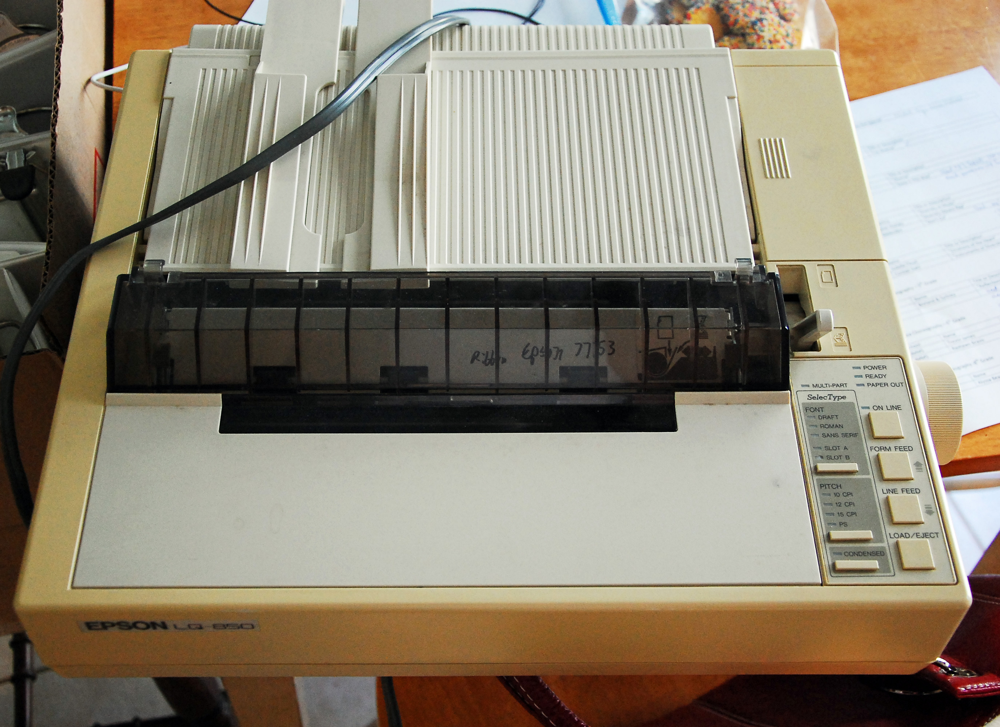
1. Impresoras de impacto de agujas¶
Las impresoras de agujas, tambien llamadas matriciales o dot matrix, forman letras y dibujos mediante una matriz de puntos. Para ello usan un cabezal con varias agujas metalicas que avanzan y retroceden muy rapidamente.
1.1. Como funcionan¶
El proceso de impresion sigue esta secuencia:
- El papel se desplaza por medio de un tractor o rodillo.
- El cabezal recorre horizontalmente la linea de impresion.
- Las agujas del cabezal golpean una cinta entintada.
- Cada impacto deja un punto sobre el papel.
- La suma de muchos puntos construye caracteres, simbolos o graficos sencillos.
Este sistema explica bien los elementos que aparecen en tus imagenes de referencia: cabezal, agujas, cinta, carro de arrastre y movimiento del papel.
1.2. Caracteristicas principales¶
- Son impresoras de impacto y, por tanto, producen un ruido mecanico apreciable.
- Pueden imprimir en papel continuo y en formularios autocopiativos con varias copias.
- Son resistentes y adecuadas para trabajos repetitivos en entornos de gestion, logistica o industria.
- Su calidad grafica es limitada frente a una laser o una de inyeccion.
- La velocidad y la definicion dependen, entre otros factores, del numero de agujas del cabezal, como 9 o 24 agujas.
1.3. Ventajas y limitaciones¶
Ventajas
- Permiten generar varias copias de un mismo documento por impacto.
- Toleran bien jornadas largas de trabajo.
- El coste por pagina puede ser bajo en tareas administrativas repetitivas.
Limitaciones
- Hacen mas ruido que otras tecnologias.
- El texto y los graficos presentan menor calidad.
- No son la mejor opcion para fotografias o documentos con acabado visual cuidado.
2. Impresoras de margarita¶
La impresora de margarita es otra impresora de impacto, pero su mecanismo es diferente. En lugar de un cabezal de agujas, utiliza una rueda con brazos. En el extremo de cada brazo hay un caracter en relieve. La forma del conjunto recuerda a una flor, de ahi su nombre.
2.1. Como funcionan¶
Cuando se va a imprimir un caracter:
- La rueda gira hasta colocar la letra adecuada frente al papel.
- Un martillo golpea la parte posterior del brazo seleccionado.
- El caracter impacta sobre la cinta entintada.
- La tinta se transfiere al papel con una forma muy nitida, similar a la de una maquina de escribir.
El resultado es un texto de gran calidad para su epoca, pero con una limitacion clara: al trabajar caracter a caracter, esta tecnologia es lenta y poco flexible para graficos.
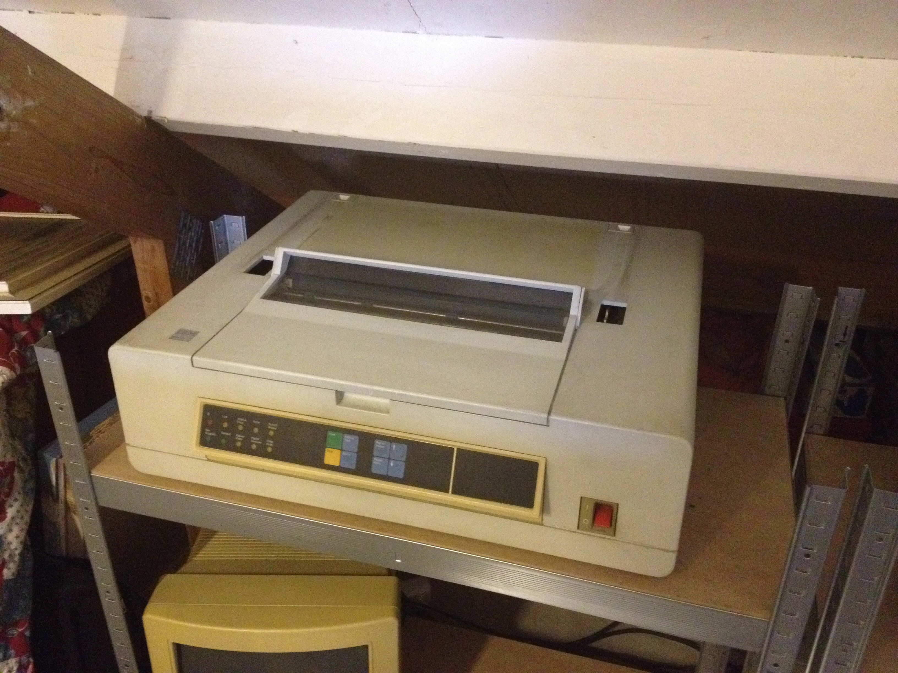
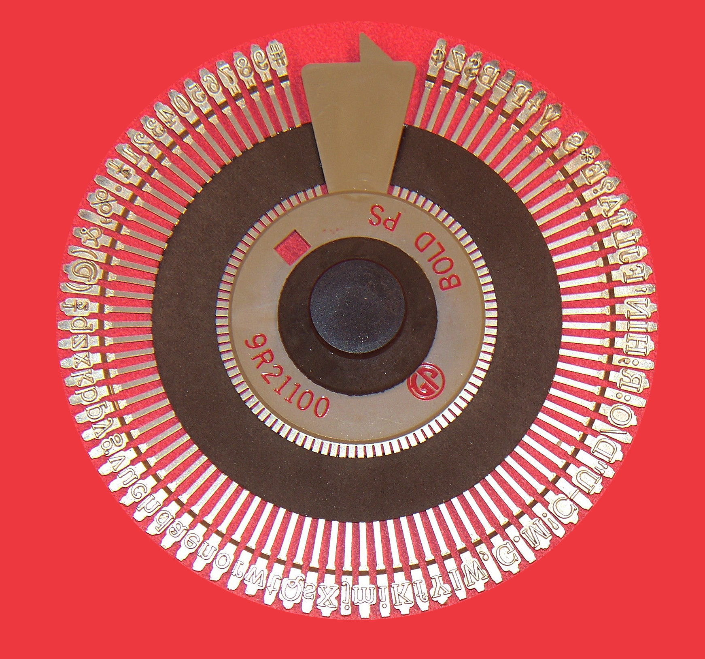
2.2. Caracteristicas principales¶
- Imprimen con calidad de letra muy alta para texto.
- Funcionan bien cuando la prioridad es escribir documentos limpios, no imprimir imagenes.
- Son ruidosas, porque tambien trabajan por impacto.
- Cambiar el tipo de letra puede requerir sustituir la rueda.
- Apenas sirven para graficos complejos.
2.3. Ventajas y limitaciones¶
Ventajas
- La forma de cada caracter queda muy definida.
- Fueron muy valoradas en oficinas donde se buscaba una presentacion similar a la maquina de escribir.
Limitaciones
- Son lentas comparadas con otras soluciones posteriores.
- Tienen poca versatilidad para simbolos, diseños o imagenes.
- Han quedado desplazadas por impresoras laser e inyeccion, mucho mas practicas para uso general.
3. Impresoras de inyeccion de tinta¶
Las impresoras de inyeccion de tinta pertenecen al grupo de no impacto. No golpean el papel, sino que expulsan microgotas de tinta a traves de boquillas muy pequeñas situadas en el cabezal de impresion. Gracias a ello pueden trabajar con mas silencio y ofrecer buena calidad en texto, color e imagen.
3.1. Elementos principales¶
En una impresora de inyeccion de tinta suelen intervenir estos elementos:
- Cartuchos o depositos de tinta.
- Cabezal de impresion, donde se encuentran las boquillas.
- Carro, que desplaza el cabezal de lado a lado.
- Rodillos, que avanzan el papel.
- Electronica de control, que decide cuando y donde expulsar cada gota.
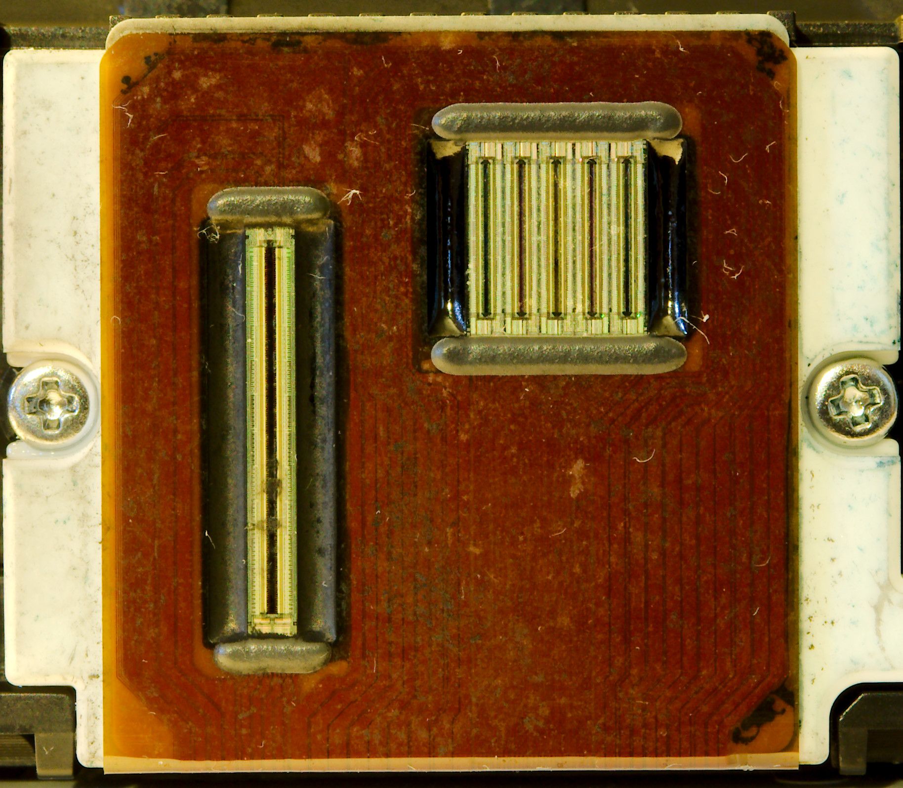
3.2. Como funciona el sistema de inyeccion¶
El funcionamiento general puede resumirse asi:
- El papel avanza una pequeña distancia.
- El carro mueve el cabezal a gran velocidad de un lado a otro.
- Las boquillas expulsan gotas diminutas en posiciones muy precisas.
- La combinacion de miles de gotas forma letras, lineas, sombras y colores.
La precision del sistema depende del tamaño de las gotas, del numero de boquillas y del control electronico del disparo. Por eso estas impresoras pueden producir documentos a color y fotografias con mucho mas detalle que una impresora de impacto.
3.3. Principales sistemas de inyeccion¶
Las impresoras de inyeccion no trabajan todas del mismo modo. Existen tres sistemas principales para controlar la salida y el recorrido de la tinta:
- Sistema termico: una resistencia calienta rapidamente la tinta y genera una burbuja que empuja la gota hacia fuera.
- Sistema piezoelectrico: un cristal piezoelectrico cambia ligeramente de forma al recibir corriente y presiona la tinta para expulsarla por la boquilla.
- Sistema con carga electrica: la tinta puede salir como un chorro continuo, dividirse en gotas, cargarse electricamente y desviarse mediante un campo electrico hacia el papel o hacia un sistema de recuperacion.
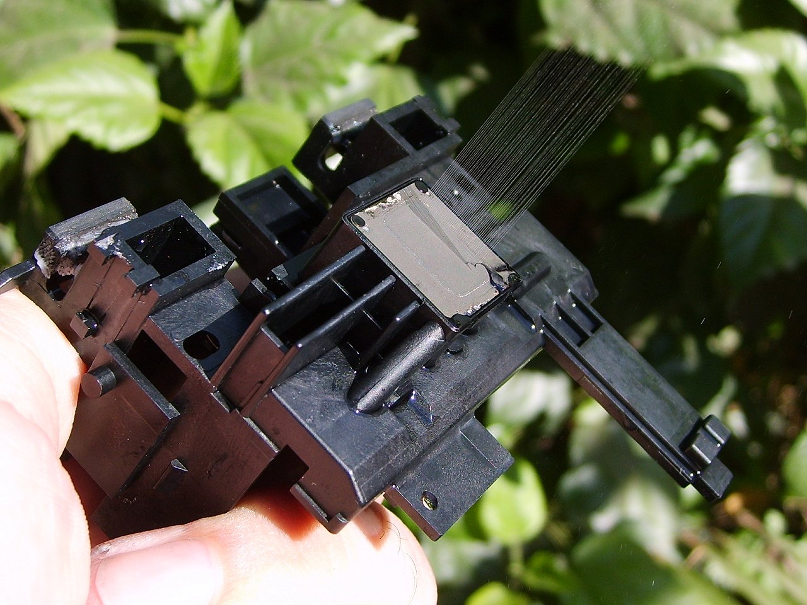
3.4. Sistema con carga electrica¶
El sistema con carga electrica se emplea sobre todo en equipos de inyeccion continua de tinta. En este caso, la tinta no sale gota a gota desde el principio, sino como un chorro continuo que despues se fragmenta.

El proceso puede resumirse asi:
- La tinta sale en un chorro continuo.
- Ese chorro se divide en gotas muy pequeñas.
- Las gotas se cargan electricamente.
- Un campo electrico desvía cada gota.
- Algunas gotas se dirigen hacia el papel y otras se desvían para ser recogidas o descartadas.
Este sistema permite un control muy preciso del recorrido de las gotas y se emplea especialmente en entornos industriales, codificacion de productos, embalajes y lineas de produccion.
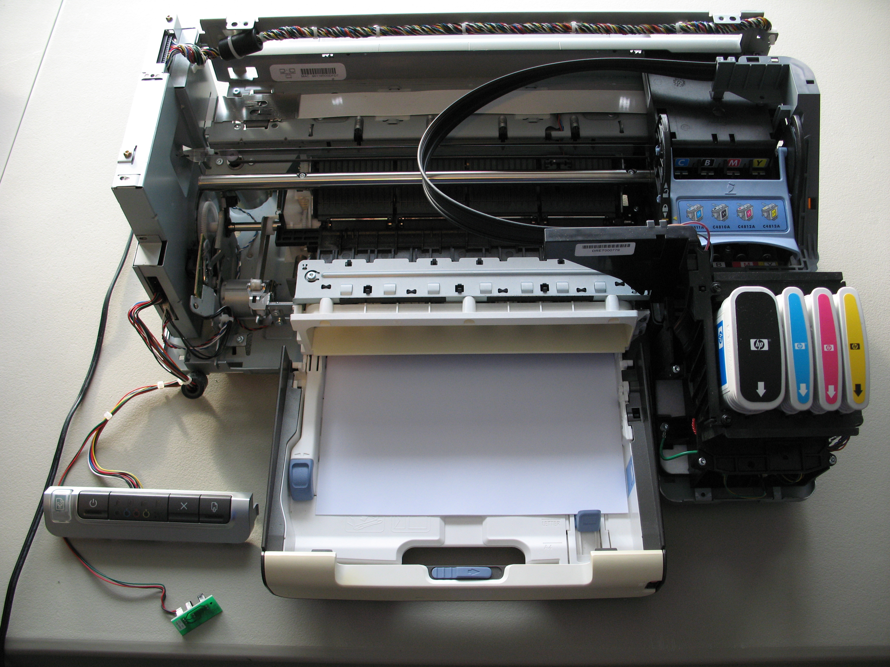
3.5. Ventajas y limitaciones¶
Ventajas
- Permiten imprimir en color con buena calidad.
- Son silenciosas comparadas con las impresoras de impacto.
- Resultan adecuadas para texto, apuntes, graficos y fotografia domestica.
Limitaciones
- Los cartuchos y cabezales requieren mantenimiento para evitar secados y obstrucciones.
- El coste por pagina puede ser alto si se imprime mucho.
- La velocidad suele ser menor que en muchas impresoras laser de oficina.
Comparacion rapida entre agujas, margarita e inyeccion¶
| Aspecto | Agujas | Margarita | Inyeccion |
|---|---|---|---|
| Tipo de impresion | Matriz de puntos | Caracteres prefijados | Microgotas de tinta |
| Calidad de texto | Media | Alta | Alta |
| Graficos | Basicos | Muy limitados | Buenos |
| Formularios multicopia | Muy adecuada | Adecuada | No adecuada |
| Ruido | Alto | Alto | Bajo |
| Uso actual | Nichos administrativos e industriales | Muy residual | Hogar, educacion y pequeña oficina |
4. Impresoras laser¶
Las impresoras laser tambien pertenecen al grupo de no impacto. En lugar de tinta liquida, emplean toner, un polvo muy fino que se adhiere al papel gracias a procesos electrostaticos y que despues se fija por calor. Son muy utilizadas en oficinas, centros educativos y entornos donde se imprimen grandes cantidades de documentos.
4.1. Elementos principales¶
Los componentes mas importantes de una impresora laser son:
- Tambor fotoconductor, donde se forma la imagen electrostatica.
- Laser o sistema LED, que dibuja la informacion sobre el tambor.
- Toner, polvo fino que se adhiere a las zonas activadas del tambor.
- Rodillo de transferencia, que lleva el toner al papel.
- Fusor, conjunto que aplica calor y presion para fijar el toner.

4.2. Como funciona una impresora laser¶
El proceso se puede resumir en estas fases:
- El tambor fotoconductor recibe una carga electrica uniforme.
- El laser descarga selectivamente ciertas zonas del tambor y dibuja la imagen.
- El toner se adhiere a esas zonas marcadas.
- El papel pasa junto al tambor y recoge el toner.
- El fusor aplica calor y presion para fijar definitivamente el polvo al papel.
Gracias a este sistema, las impresoras laser ofrecen texto nitido, buena velocidad y un rendimiento alto en trabajos repetitivos.
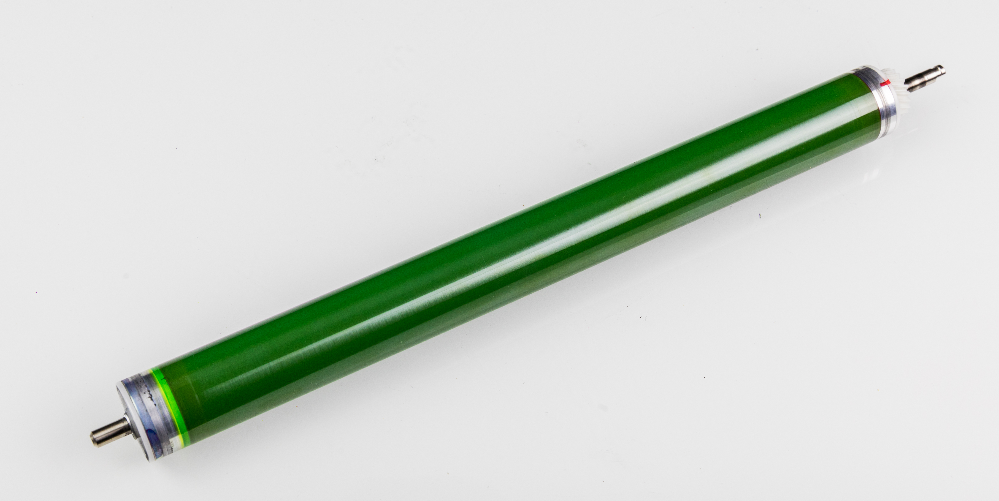

4.3. Impresora laser monocromo¶
La impresora laser monocromo trabaja normalmente con un solo toner negro. Esta solucion se centra en imprimir texto y documentos con rapidez, nitidez y menor coste por pagina.
Suele ser la opcion mas adecuada cuando:
- Se imprimen apuntes, examenes o documentos administrativos.
- No se necesita color.
- Se busca un equipo rapido y sencillo de mantener.
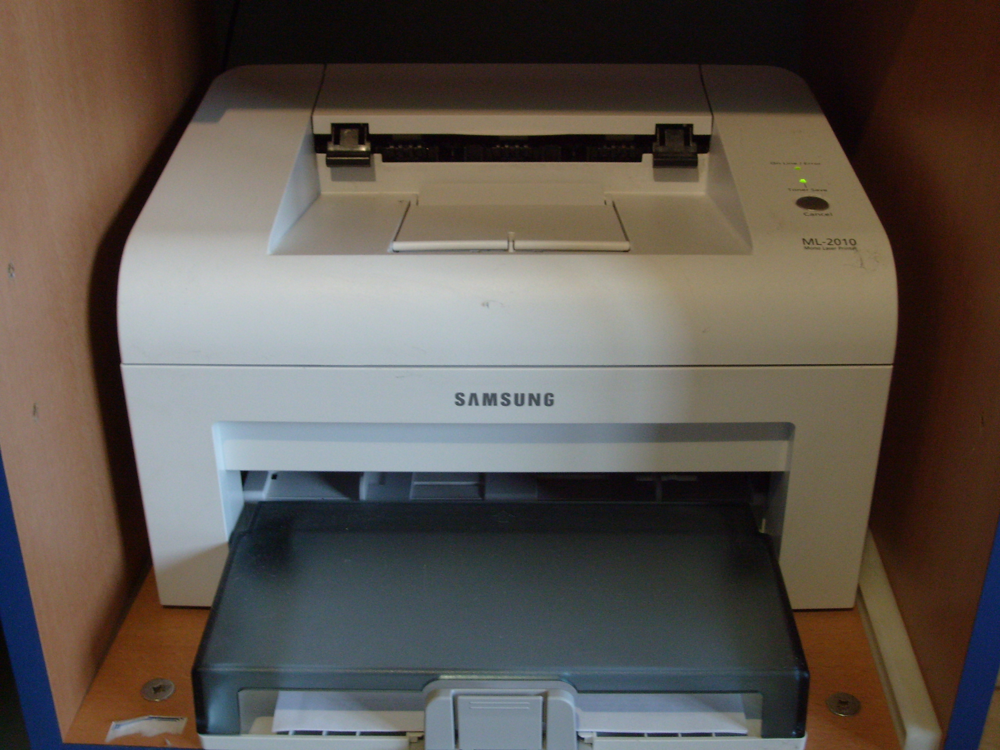
4.4. Impresora laser a color¶
La impresora laser a color utiliza normalmente cuatro toner: cian, magenta, amarillo y negro. Al combinar esos colores puede producir materiales con graficos, esquemas, portadas o presentaciones.
Frente a una monocromo, la laser color:
- Tiene un mecanismo interno mas complejo.
- Requiere mas consumibles.
- Resulta mas adecuada para documentos mixtos con texto e imagen.
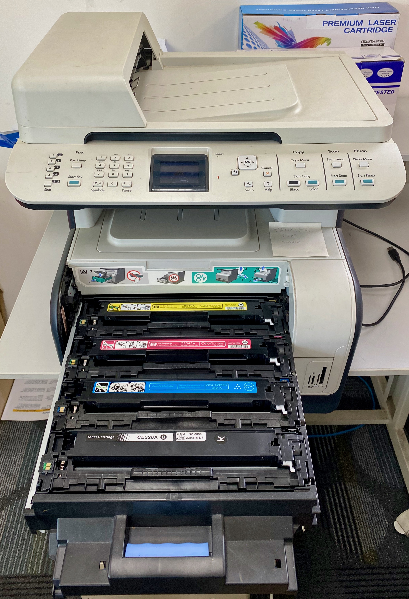
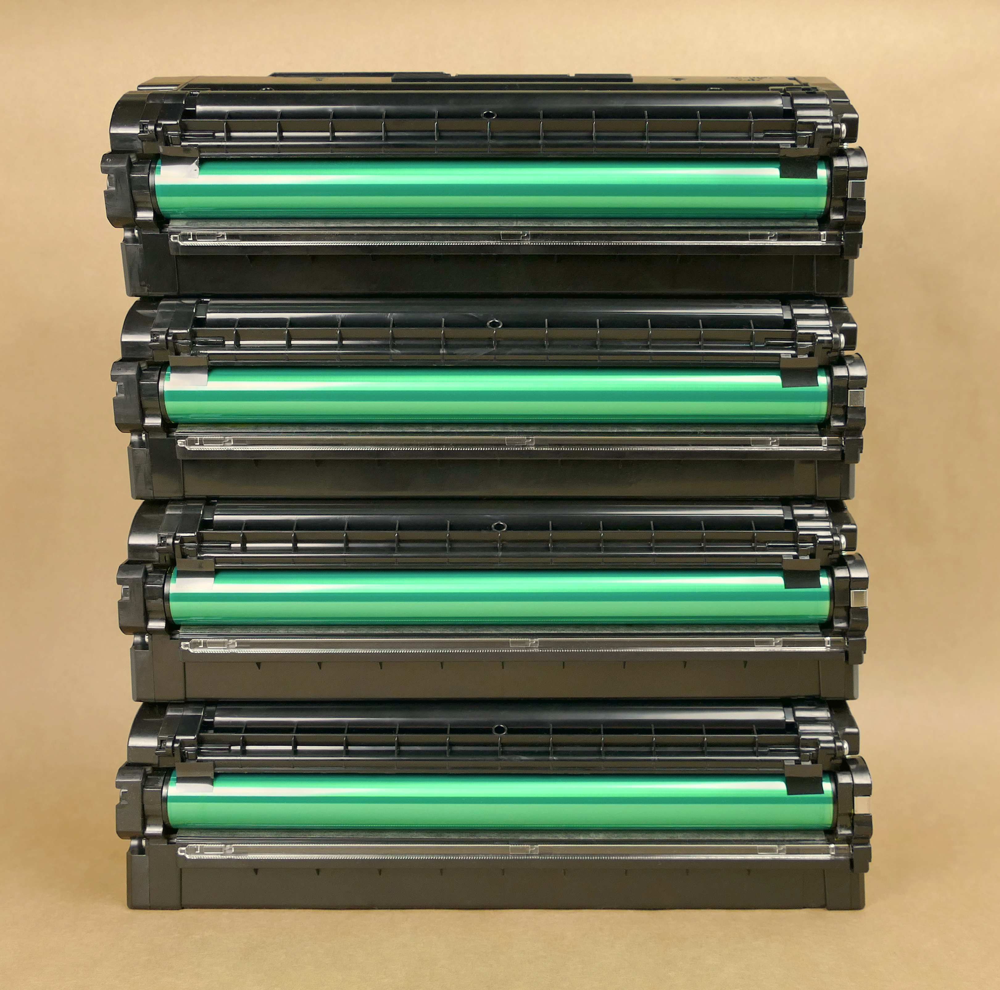
4.5. Diferencias entre laser monocromo y laser color¶
| Aspecto | Laser monocromo | Laser color |
|---|---|---|
| Toner | Negro | Cian, magenta, amarillo y negro |
| Coste por pagina | Menor | Mayor |
| Complejidad interna | Menor | Mayor |
| Uso habitual | Texto y documentos | Texto, graficos y presentaciones |
| Mantenimiento | Mas simple | Mas exigente |
4.6. Ventajas y limitaciones¶
Ventajas
- Muy buena calidad en texto.
- Alta velocidad en documentos largos.
- Menor riesgo de secado que en la inyeccion de tinta.
Limitaciones
- Los equipos color son mas caros y complejos.
- No suelen ser la mejor opcion para fotografia domestica.
- El fusor trabaja con calor, por lo que consume energia y requiere componentes internos especificos.
5. Impresoras termicas¶
Las impresoras termicas son impresoras de no impacto que generan la impresion aplicando calor. Son muy frecuentes en comercios, TPV, cajeros, logistica, etiquetado y sistemas de tickets. Dentro de este grupo conviene distinguir dos sistemas principales: la impresion termica directa y la transferencia termica.
5.1. Elementos principales¶
En una impresora termica suelen intervenir estos elementos:
- Cabezal termico, que calienta puntos concretos.
- Rodillo de arrastre, que mueve el papel o la etiqueta.
- Papel termico o cinta de transferencia, segun el sistema.
- Electronica de control, que decide que zonas deben calentarse.
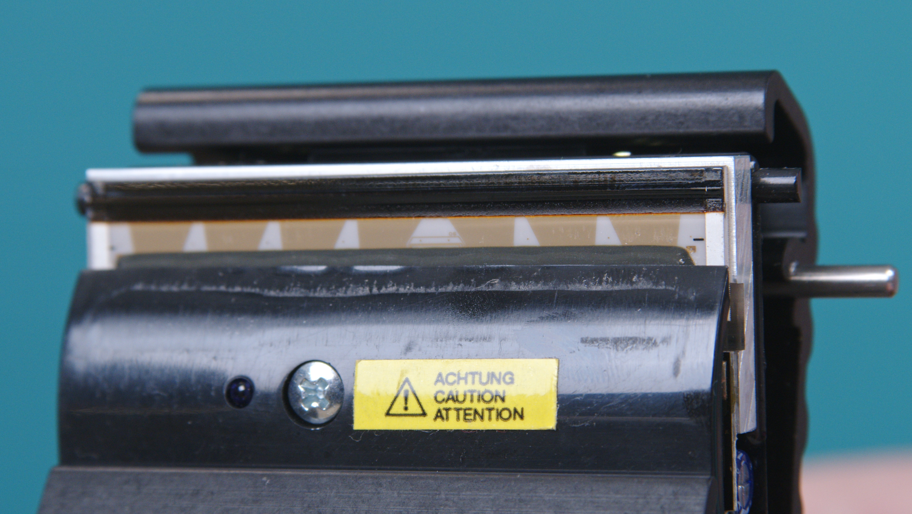
5.2. Impresion termica directa¶
En la impresion termica directa no se utiliza tinta ni toner. El cabezal calienta directamente un papel termico especial, que se oscurece en las zonas donde recibe calor.
El proceso es sencillo:
- El papel termico avanza.
- El cabezal calienta puntos concretos.
- El recubrimiento del papel reacciona al calor.
- Aparecen letras, numeros, codigos o graficos simples.
Este sistema se utiliza mucho en tickets de compra, recibos, turnos y comprobantes breves.
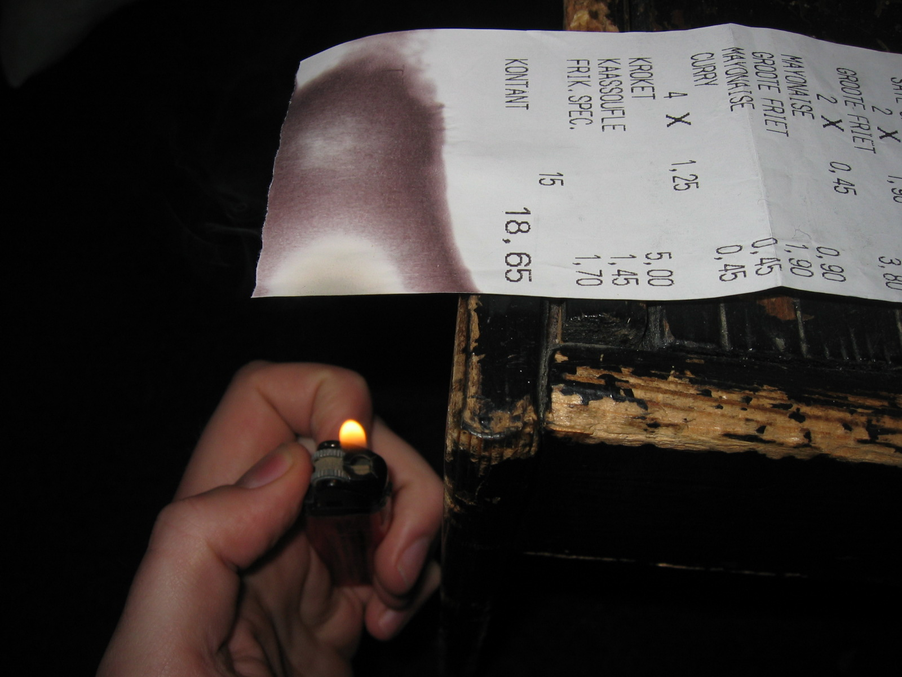
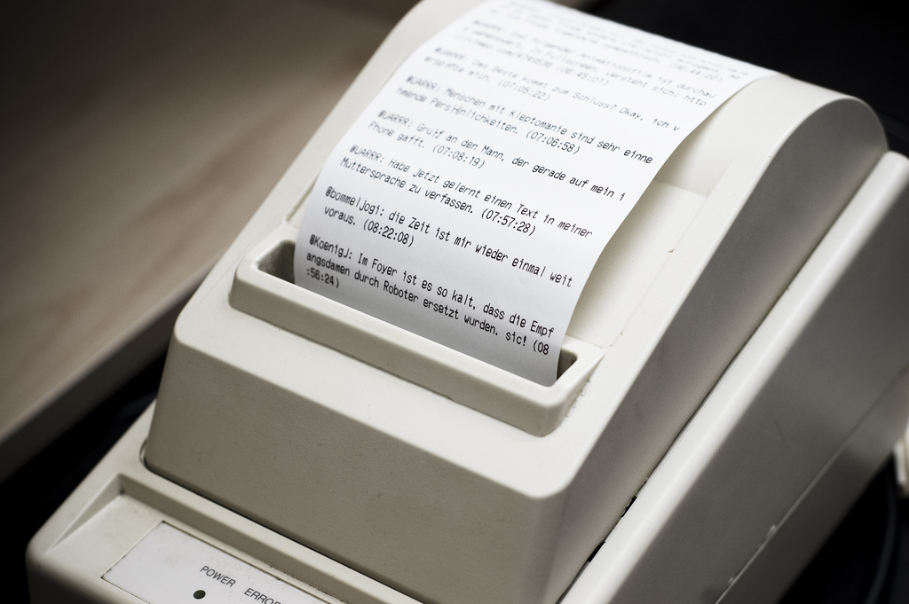
5.3. Transferencia termica¶
En la transferencia termica tampoco se imprime por impacto, pero aqui el calor no actua directamente sobre el papel. El cabezal calienta una cinta entintada y esa tinta se transfiere al soporte, que puede ser papel, plastico o material para etiquetas.
El proceso general es este:
- El cabezal termico calienta zonas concretas.
- La cinta de transferencia libera tinta en esas zonas.
- La tinta pasa al soporte.
- Se obtiene una impresion mas estable y duradera.
Este sistema es habitual en etiquetas de almacen, codigos de barras, identificacion de productos y entornos industriales.
5.4. Diferencias entre termica directa y transferencia termica¶
| Aspecto | Termica directa | Transferencia termica |
|---|---|---|
| Consumible principal | Papel termico | Cinta de transferencia y soporte |
| Uso de tinta | No | Si, mediante cinta |
| Durabilidad | Menor | Mayor |
| Uso habitual | Tickets y recibos | Etiquetas y entornos industriales |
| Resistencia | Mas limitada | Mas alta |
5.5. Ventajas y limitaciones¶
Ventajas
- Son silenciosas y rapidas.
- Tienen mecanismos sencillos.
- Resultan muy utiles para tickets, etiquetas y codigos de barras.
Limitaciones
- La termica directa depende de papel especial.
- Los tickets termicos pueden deteriorarse con calor, roce o luz.
- La transferencia termica necesita cinta y consumibles especificos.
6. Impresoras de sublimacion¶
Las impresoras de sublimacion son impresoras de no impacto que transfieren color al soporte mediante calor. En este sistema, el colorante pasa a estado gaseoso y se fija sobre el material de impresion. Se utilizan sobre todo en fotografia, personalizacion de objetos, carnets, merchandising y ciertos trabajos textiles.
6.1. Como funciona la sublimacion¶
El funcionamiento general puede resumirse asi:
- La impresora trabaja con un consumible de color organizado en paneles o capas.
- El cabezal aplica calor con distinta intensidad.
- El colorante se vaporiza o se transfiere en forma muy fina.
- El soporte absorbe el color y se forman imagenes con transiciones suaves.
Este sistema destaca porque puede generar degradados y colores continuos con muy buen acabado visual.
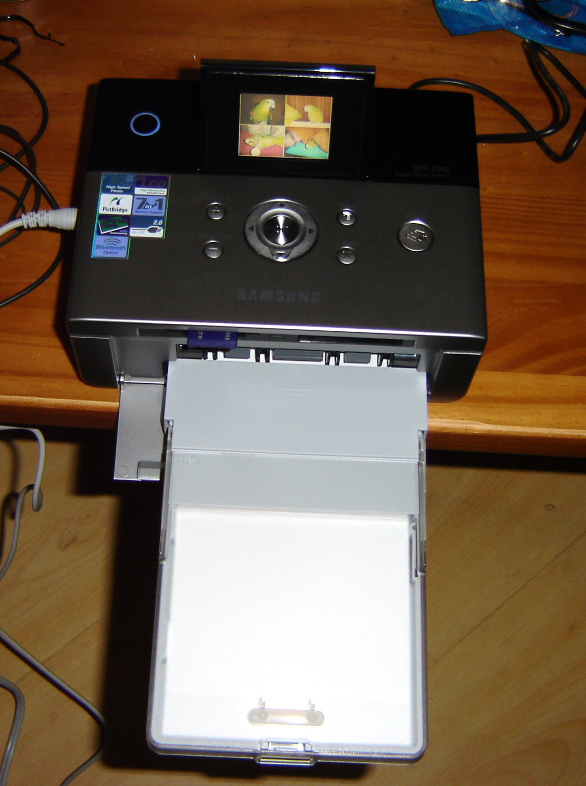
6.2. Consumibles y color¶
En muchas impresoras de sublimacion fotografica, el color se aplica por paneles sucesivos, normalmente amarillo, magenta y cian, y a veces una capa final de proteccion.
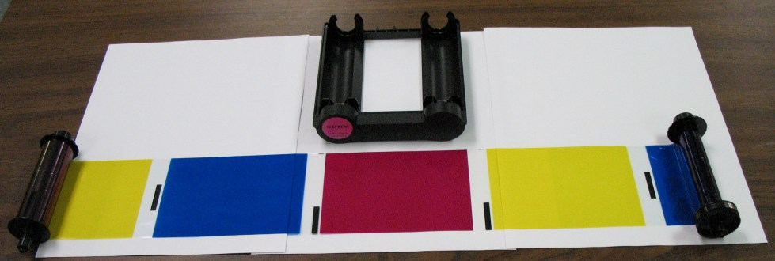
6.3. Usos habituales¶
Las impresoras de sublimacion son frecuentes en:
- Impresion fotografica de pequeño formato.
- Carnets y tarjetas identificativas.
- Personalizacion de tazas, camisetas y objetos.
- Produccion grafica sobre soportes preparados para sublimacion.
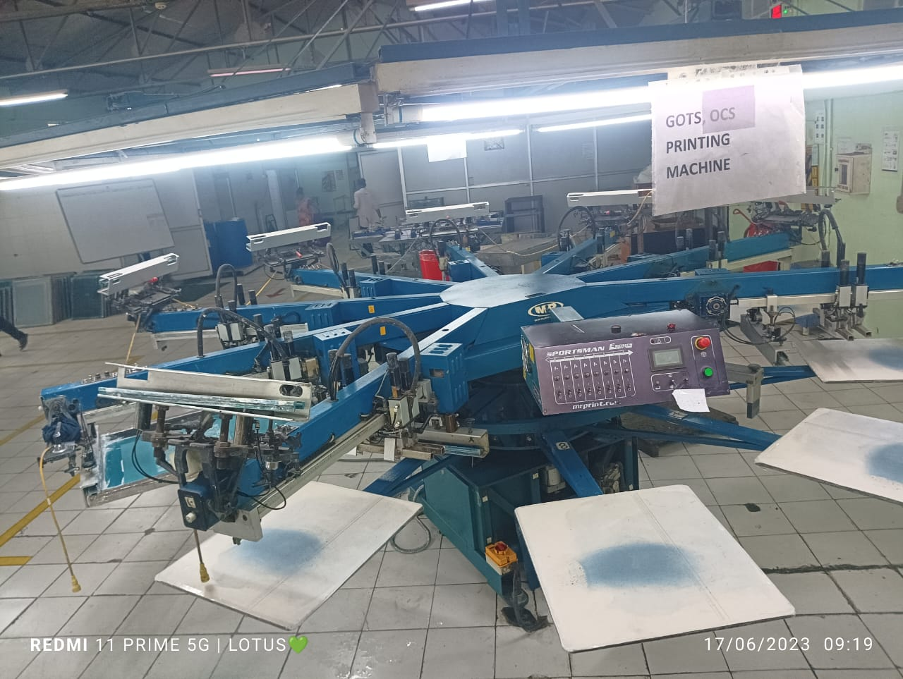
6.4. Ventajas y limitaciones¶
Ventajas
- Muy buena calidad en color y degradados.
- Acabado atractivo para fotografia y personalizacion.
- Resultado uniforme en soportes preparados para este sistema.
Limitaciones
- Requieren consumibles y soportes especificos.
- No son la opcion habitual para grandes volumenes de oficina.
- Su uso suele estar mas especializado que el de una laser o una de inyeccion domestica.
7. Comparacion final de las principales tecnologias de impresion¶
La siguiente tabla resume de forma global las tecnologias estudiadas en esta unidad:
| Tecnologia | Tipo | Consumible principal | Punto fuerte | Limitacion principal | Uso habitual |
|---|---|---|---|---|---|
| Agujas | Impacto | Cinta entintada | Formularios multicopia | Ruido y baja calidad grafica | Administracion, industria |
| Margarita | Impacto | Cinta entintada | Texto muy definido | Muy poca flexibilidad | Uso residual |
| Inyeccion de tinta | No impacto | Tinta liquida | Color y versatilidad | Mantenimiento del cabezal | Hogar, educacion |
| Laser monocromo | No impacto | Toner negro | Velocidad y texto nitido | Sin color | Oficina y centros educativos |
| Laser color | No impacto | Toner CMYK | Documentos con graficos | Mayor coste y complejidad | Oficina, presentaciones |
| Termica directa | No impacto | Papel termico | Rapidez y simplicidad | Menor durabilidad del soporte | Tickets y recibos |
| Transferencia termica | No impacto | Cinta y soporte | Etiquetas resistentes | Consumibles especificos | Logistica e industria |
| Sublimacion | No impacto | Paneles de color o consumibles especificos | Muy buen acabado visual | Uso mas especializado | Fotografia y personalizacion |
8. Conclusion¶
No existe una impresora perfecta para todos los casos. La eleccion depende del tipo de documento, del volumen de trabajo, del coste por impresion, del nivel de calidad necesario y del soporte sobre el que se va a imprimir.
De forma general:
- Las impresoras de impacto son utiles cuando importa la resistencia mecanica o la impresion sobre formularios multicopia.
- Las impresoras de inyeccion destacan por su versatilidad y su buena calidad en color.
- Las impresoras laser son muy adecuadas para imprimir mucho texto con rapidez.
- Las impresoras termicas dominan en tickets, etiquetas y sistemas de punto de venta.
- Las impresoras de sublimacion se reservan para trabajos donde el acabado visual y la personalizacion son prioritarios.
Conocer estas tecnologias ayuda a elegir el equipo adecuado y a comprender mejor por que cada impresora incorpora unos componentes, unos consumibles y un mantenimiento distintos.
Ideas clave¶
- Las impresoras de impacto golpean una cinta entintada contra el papel.
- Las impresoras de agujas crean caracteres a partir de puntos.
- Las impresoras de margarita imprimen caracteres completos con una rueda de letras.
- Las impresoras de inyeccion de tinta expulsan microgotas de tinta mediante boquillas muy precisas.
- Las impresoras laser usan toner, tambor fotoconductor y fusor para fijar la imagen al papel.
- Las impresoras termicas imprimen aplicando calor, bien sobre papel termico o bien mediante transferencia desde una cinta.
- Las impresoras de sublimacion transfieren color mediante calor y destacan en fotografia y personalizacion.
- Las tecnologias de no impacto dominan hoy el mercado por su silencio, velocidad y calidad grafica.
Fuentes consultadas¶
- Encyclopaedia Britannica. Printer
- Encyclopaedia Britannica. Ink-jet printer
- Wikipedia. Dot matrix printing
- Wikipedia. Daisy wheel printing
- Wikipedia. Inkjet printing
- Wikimedia Commons. Epson dot matrix printer
- Wikimedia Commons. Dot matrix print head
- Wikimedia Commons. Daisy wheel printer
- Wikimedia Commons. Daisy wheel print wheel
- Wikimedia Commons. Canon iP3500 Print Head
- Wikimedia Commons. EPSON Piezoelectric InkJet Print Nozzle
- Wikimedia Commons. Ij continuous
- Wikimedia Commons. HP Business Inkjet 1200n - Continuous Ink System - Interior overview
- Wikimedia Commons. Aufbau Laserdrucker
- Wikimedia Commons. Laser toner cartridge
- Wikimedia Commons. Xerox WorkCentre 6605 - photoconductor drum
- Wikimedia Commons. Samsung ML-2010 (monochrome laser printer)
- Wikimedia Commons. HP Color LaserJet CM1312nfi Multifunction Printer
- Wikimedia Commons. Four Samsung laser toner cartridges front view
- Wikimedia Commons. Thermal paper
- Wikimedia Commons. Twitter receipt printer
- Wikimedia Commons. Thermal printhead
- Wikimedia Commons. Thermal transfer
- Wikimedia Commons. Samsung SPP-2040
- Wikimedia Commons. RGB dye sublimation panels
- Wikimedia Commons. Fabric Printing machine
{kind=link}
{kind=link}
{kind=link}
{kind=link}
{kind=link}
{kind=link}
{kind=link}
{kind=link}
{kind=link}
{kind=link}
{kind=link}
.jpg){kind=link}
{kind=link}
{kind=link}
{kind=link}
{kind=link}
{kind=link}
.jpg){kind=link}
{kind=link}
{kind=link}
{kind=link}
Fecha de actualización: 07/04/2026